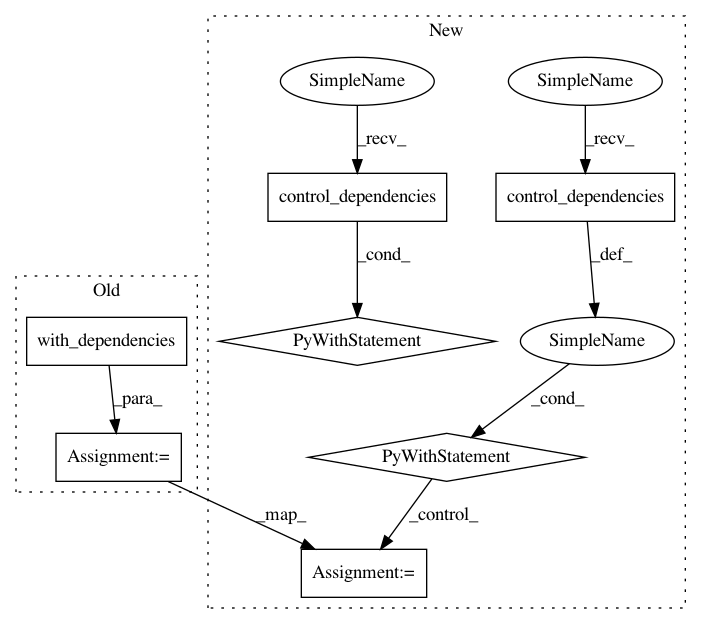

e3e9b96335b0cb813e51e309b3372bcd157370c2,magenta/models/image_stylization/image_utils.py,,_crop,#Any#Any#Any#Any#Any#,375
Before Change
// Use tf.slice instead of crop_to_bounding box as it accepts tensors to
// define the crop size.
image = tf.control_flow_ops.with_dependencies(
[size_assertion],
tf.slice(image, offsets, cropped_shape))
return tf.reshape(image, cropped_shape)
def _central_crop(image_list, crop_height, crop_width):
After Change
rank_assertion = tf.Assert(
tf.equal(tf.rank(image), 3),
["Rank of image must be equal to 3."])
with tf.control_dependencies([rank_assertion]):
cropped_shape = tf.pack([crop_height, crop_width, original_shape[2]])
size_assertion = tf.Assert(
tf.logical_and(
tf.greater_equal(original_shape[0], crop_height),
tf.greater_equal(original_shape[1], crop_width)),
["Crop size greater than the image size."])
offsets = tf.to_int32(tf.pack([offset_height, offset_width, 0]))
// Use tf.slice instead of crop_to_bounding box as it accepts tensors to
// define the crop size.
with tf.control_dependencies([size_assertion]):
image = tf.slice(image, offsets, cropped_shape)
return tf.reshape(image, cropped_shape)
def _central_crop(image_list, crop_height, crop_width):
In pattern: SUPERPATTERN
Frequency: 3
Non-data size: 7
Instances
Project Name: tensorflow/magenta
Commit Name: e3e9b96335b0cb813e51e309b3372bcd157370c2
Time: 2016-12-08
Author: iansimon@users.noreply.github.com
File Name: magenta/models/image_stylization/image_utils.py
Class Name:
Method Name: _crop
Project Name: tensorflow/magenta
Commit Name: e3e9b96335b0cb813e51e309b3372bcd157370c2
Time: 2016-12-08
Author: iansimon@users.noreply.github.com
File Name: magenta/models/image_stylization/image_utils.py
Class Name:
Method Name: _crop
Project Name: tensorflow/models
Commit Name: 443c074527f164955720dcde5c1830faf519f89f
Time: 2017-05-18
Author: neal@nealwu.com
File Name: slim/preprocessing/vgg_preprocessing.py
Class Name:
Method Name: _random_crop
Project Name: keras-team/keras
Commit Name: ad9268d67014273e35faac4ff21cbfe929bf1d2b
Time: 2021-01-27
Author: scottzhu@google.com
File Name: keras/utils/metrics_utils.py
Class Name:
Method Name: ragged_assert_compatible_and_get_flat_values